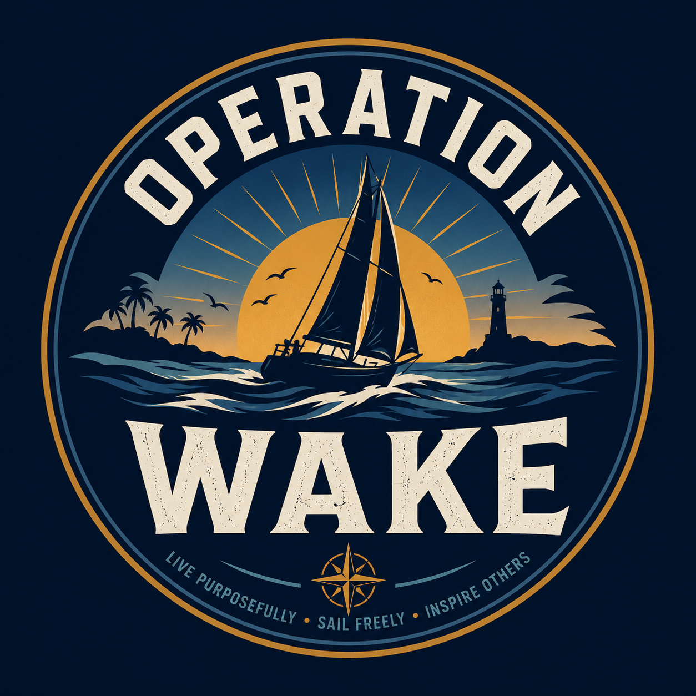

The Catalina 36
Big Trouble is the planned circumnavigation boat. If it sells before completion, its net proceeds remain separate and fund the replacement challenge vessel.

OPERATION WAKETHE LONG WAY HOME · MISSION 04
Leave Florida. Head west. Take the long way back.
THE EXPEDITION WE’VE BEEN BUILDING TOWARD
Mission 4 is planned as a roughly 25,000-mile, predominantly solo circumnavigation from Florida back to Florida aboard our 1984 Catalina 36 Mk I. The exact route and timeframe remain under development so seasonal weather, safe routing, and the boat’s demonstrated capability can shape the passage plan.
This is the goal behind the progression: pursue something extraordinary through faith, perseverance, preparation, and hard work. I want the journey to show others facing their own challenges that meaningful goals are still worth pursuing, one prepared step at a time.
Big Trouble is the planned circumnavigation boat. If it sells before completion, its net proceeds remain separate and fund the replacement challenge vessel.
Phase 1 adds $50,000 for post-Bermuda corrections and shakedown. Phase 2 adds $250,000 for the circumnavigation operating fund.
Family or close friends may assist on selected passages. Every effort will be made to sail solo, while qualified help remains available when safety requires it.
FLORIDA TO FLORIDA
The route is still being developed. It will begin and end in Florida, but no public sequence of oceans, canals, ports, or seasonal gates is final. The selected route must fit weather patterns, vessel condition, insurance and clearance requirements, maintenance needs, and realistic passage timing.
Choose ocean passages and departure windows around the safest practical seasonal conditions rather than a fixed calendar.
Plan a delivery-style expedition with efficient passages, necessary stops, recovery time, maintenance access, and safe alternatives.
Account for provisions, fuel, water, visas, customs, insurance, communications, repairs, and ports capable of supporting the boat.
Confirm each major leg against current weather, vessel condition, skipper readiness, available support, and contingency options.
This is a route concept, not a finalized passage plan. Specific ports, dates, distances, and seasonal gates will be refined before departure. Progress will account for fuel and water, provisions, repairs, customs and clearance, educational stops, and crew rest.
THREE MISSIONS OF LESSONS
The Texas run develops practical experience. The Mexico run tests upgraded navigation and energy systems. The Bermuda Triangle run delivers the strongest offshore test before the circumnavigation. Mission 4 begins with a separate readiness phase that reviews those lessons and completes the work they expose.
Preparation will cover vessel condition, required repairs and upgrades, sails and rigging, safety and communications, spares, maintenance routines, provisioning, weather routing, rest, and emergency procedures. Detailed requirements will follow the actual boat and the experience gained aboard her.
Predominantly solo sailing makes familiarity with the boat and disciplined routines central to the plan. The preparation must support both the vessel and the person making the decisions aboard her.
MISSION 4 FUNDING
Phase 1 reaches $630,000 cumulative. The additional $50,000 covers corrective work, additional training to be determined after the first three missions, shakedown sailing, and overall departure readiness.
Phase 2 reaches the $880,000 TLWH target. The additional $250,000 provides the circumnavigation operating fund: approximately $175,000 for passage operations, maintenance, and repairs; $25,000 for provisions; and $50,000 for contingency.
Published estimates will use conservative high-side planning assumptions. Actual costs may be lower. We’ll refine the budget as real information replaces assumptions and distinguish projected costs from actual spending.
The TLWH progress bar counts only direct contributions made through the TLWH campaign. Sponsorship support and any Catalina sale proceeds are tracked separately. View live campaign progress.
COMMUNITY OBJECTIVES
During Mission 4, the community may help choose among crew-approved safe options along the route. That could mean a landmark photo, a maritime museum, a local food, a conversation with a local sailor, or an educational objective.
The crew will first define acceptable routes, destinations, seasons, weather gates, required stops, and maximum diversions. Community participation will work within those boundaries. Safety and fundamental expedition decisions stay with the crew.
Participation details will be announced before the expedition. There is no open ballot or voting-ticket system, and contributors do not vote on whether a funded mission goes ahead.
MONEY UNLOCKS THE MISSION
Funding does not set the departure date. Skipper competence, vessel condition, required equipment, reserves, seasonal weather, route planning, and contingency and recovery plans all need to support the expedition.
Current published plan: the Florida-to-Florida objective, two funding phases, and expedition approach are outlined here. The departure date, detailed passage plan, and completed readiness checks have not yet been announced.
THE EXPEDITION LOG
This page will grow with preparation updates, route decisions, photos, videos, community objectives, and passage reports. The final record will include the actual route, distance, duration, costs, repairs, and lessons learned.
Returning to Florida closes The Long Way Home Challenge. The next chapter is the separate Operation Wake Boat Fund and a future challenge series shaped by the vessel ultimately acquired. No family expedition route will be announced until the boat’s capability supports it.
Revisit Mission 3: The Bermuda Triangle Rum Run · Return to all four missions →